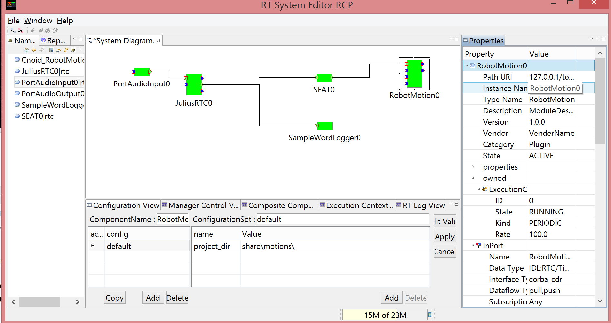

(デモ 4) 音声命令によるモーションの再生 (OpenHRI，Choreonoid)
- 音声命令により Choreonoid 上のロボットのモーションを再生する．
当ページでは最低限の操作方法のみ紹介します．`Choreonoid` や関連する RTC に関する詳細は下記リンクを参照ください．
- Choreonoid 上のロボットの腕を音声で上下する “腕上げロボット” サンプルについては[3]
- Choreonoid 上のロボットを OpenRTM 経由で操作するための RTC RobotMotionRtc に関しては[1]
- 今回用いるモデルで再現されるロボット G-ROBOTS GR-001 を用いた Choreonoid のスタートアップガイドは[2]
- Windows 7／ 8
- マイクが Windows に認識されていること
以下，特に指定ない限り，配布 USB のホームディレクトリに居ることを前提とします．
- “0_StartDemo.bat”，”1_ConnectRTC.bat”，”2_ActivateRTC.bat” の順に，下記リンクをクリックして実行．クリックして動作していなそうな場合，Explorer で ”./demo/0 SpeechDemo” を開いてそれぞれ実行．
- (Optional) デバッグ用途として，`./demo/SampleWordLogger` 内の 0 から 2 までの .bat ファイルを実行しても良い．発話内容を記録する RTC である．
このときの RTC の連結状況を RT System Editor で表示 (SampleWordLogger を実行しなかった場合は，`SampleWordLogger0` RTC が無くなるのみ):

- マイクに向かって “みぎ あげて” (スペースは0.5秒程度間を空ける) と発話．うまく認識されると，ロボットが右手を上げる．
- 他に可能な組み合わせは
みぎ|ひだり
+
あげて|さげて|あげない|さげない
- “さいせい よろしく” と発話．うまく認識されると，定義済の SampleMotion1 に従ってロボットが動き出す．
- 終了時は，”3_DeactivateRTC.bat”, “4_DisconnectRTC.bat”，”5_DemoExit.bat” の順に実行．
(次のチュートリアル[4]のトピックですが) 当デモは SEAT というモジュールを用いて状態を管理しています．当デモが管理する状態は，`./demo/MotionByVoiceDemo/motion_cnoid.seatml` で定義されているように，`both_down`, both_up, left_up, right_up といった，各腕の位置の組合せによる四種類です．
Go back to index | Go to next